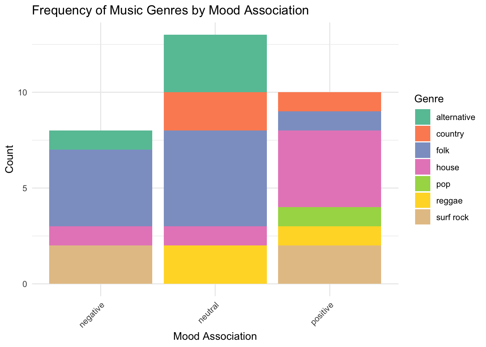

personal_data <- read_csv("193DS_Personal_Data.csv", show_col_types = FALSE) |> # reading in my personal data frame and cleaning it
clean_names()Exploratory visualization
Exploratory visualizations are incredibly useful in statistics for understanding the data that you are working with, as it helps you to identify patterns, detect outliers, and understand relationships within the data.
Data summarizing
To summarize my data I could calculate the frequency of each music genre for each given mood association (positive, negative, and neutral) by counting, because I listen to folk music often when I study, so I think the count for times I have listened to folk music while I’m feeling “neutral” (like focused or tired) will be higher than while I’m feeling “negatively”.
Code for cleaning and visualizing
genre_mood_freq <- personal_data |> # creating a new object called genre_mood_freq
count(genre, mood_association)
# count occurrences of genre and mood association
ggplot(genre_mood_freq,
aes(x = mood_association,
y = n,
fill = genre)) + # assigning variables
geom_bar(stat = "identity") + # telling R to use y-values I supply directly
labs(
title = "Frequency of Music Genres by Mood Association",
x = "Mood Association",
y = "Count",
fill = "Genre" # rename axes, title, and legend
) +
theme_minimal() + # changing the theme
scale_fill_brewer(palette = "Set2") + # choosing a new color palette for the bar chart
theme(axis.text.x = element_text(angle = 45, hjust = 1)) # angling the x-axis labels to be more readable
Figure 1. Comparison of the frequency that I listen to different music genres between negative, neutral, and positive mood associations, which were self-determined based on my emotions at the time of listening. Stacked bar chart shows individual counts of times listened to each genre during each mood association, as well as total count of times listened to music during each mood association. Folk music exhibited the highest overall listening frequency, and was also the most listened to genre during “negative” and “neutral” moods, whereas house music was the most listened to genre during “positive” moods. Data collected and recorded in personal music listening log (193DS_Personal_Data.xlsx).
Table
ft <- genre_mood_freq |> # making a new object called "ft"
select(genre, mood_association, n) # selecting only these columns
flextable(ft) |> # creating a flextable from the new object "ft" created
set_caption("Count of Music Genres by Mood") |> # setting a caption for the table
set_header_labels(values = list( # relabeling column headers for readability
genre = "Genre",
mood_association = "Mood Association",
n = "Frequency")) |>
theme_box() |> # bolding the lines of the table
set_table_properties(align = "center",
layout = "autofit") # centering the table on the page/output and autofitting the layout of itGenre | Mood Association | Frequency |
|---|---|---|
alternative | negative | 1 |
alternative | neutral | 3 |
country | neutral | 2 |
country | positive | 1 |
folk | negative | 4 |
folk | neutral | 5 |
folk | positive | 1 |
house | negative | 1 |
house | neutral | 1 |
house | positive | 4 |
pop | positive | 1 |
reggae | neutral | 2 |
reggae | positive | 1 |
surf rock | negative | 2 |
surf rock | positive | 2 |
Affective visualization
Affective visualizations strive to achieve a different purpose than exploratory or communicative visualizations in that they go beyond simply presenting data and instead aim to engage the viewer on a more emotional level than raw statistics.
Inspiration
Using the Dear Data project by Giorgi Lupi and Stefanie Posavec as inspiration, I created a unique symbol for each recorded data point that encompasses each column and is organized within a calendar to portray the date and time of each point. Since my data includes music genre I made a music note to represent each data point and changed certain aspects of the music note to represent the information pertaining to that day of listening, which includes genre, mood, mood association, if I was listening with people, method of listening, selection of music, and if it was a playlist or not. Each music note’s position within a square on the calendar is dictated by the time that I listened to music, with moving right and downwards in a diagonal fashion corresponding to a later time. Additionally, I included a legend that describes how to interpret my data visualization depending on the characteristics of the music notes.
Initial sketch
Draft
The first draft I created utilized axes to portray the date and time of each observation, but after getting feedback from my peers, I decided to switch to the calendar design to make the visualization more readable.
Final and key
My final affective visualization is in the calendar format, which is an improvement from the draft, but I left everything else the same for clarity purposes. Each music note is labeled with the time of day and the days that I did not listen to music or forgot to record my mood and the genre are marked with a dash, symbolizing there was no data from that day.
Artist statement
My data visualization contains 31 data points from April 20, 2025 to May 27, 2025 which each include what time I started listening to music that day, what genre it was, what mood I was in at that time, if that mood was positive, negative, or neutral, whether I was listening alone or with people, how I was listening to it, and if I searched up the music or if Spotify started playing it automatically for me. I found the creators of the “Dear Data” project, Giorgi Lupi and Stefanie Posavec, to be particularly influential in my creation of this piece because they were able to manipulate data from their personal lives in a unique way that I had never seen before, utilizing specific symbols and colors to represent certain variables. I drew my data visualization with pencil and colored pens on white printer paper, but prior to constructing the final product, I created a sketch, then an outline, and then I used a ruler to create the calendar before drawing each individual point with the corresponding colors and symbols, based on my personal data I collected.
Citation
BibTeX citation:
@online{côté2025,
author = {Côté, Anna},
title = {Personal {Data} {Visualization}},
date = {2025-06-09},
url = {https://annacote.github.io/posts/2025-code_for_blog},
langid = {en}
}
For attribution, please cite this work as:
Côté, Anna. 2025. “Personal Data Visualization.” June 9,
2025. https://annacote.github.io/posts/2025-code_for_blog.